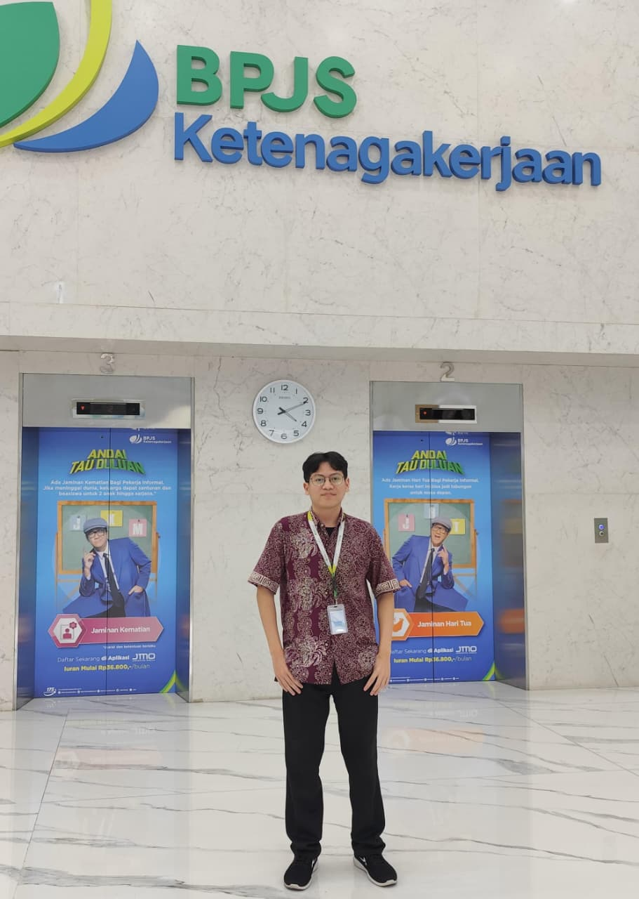
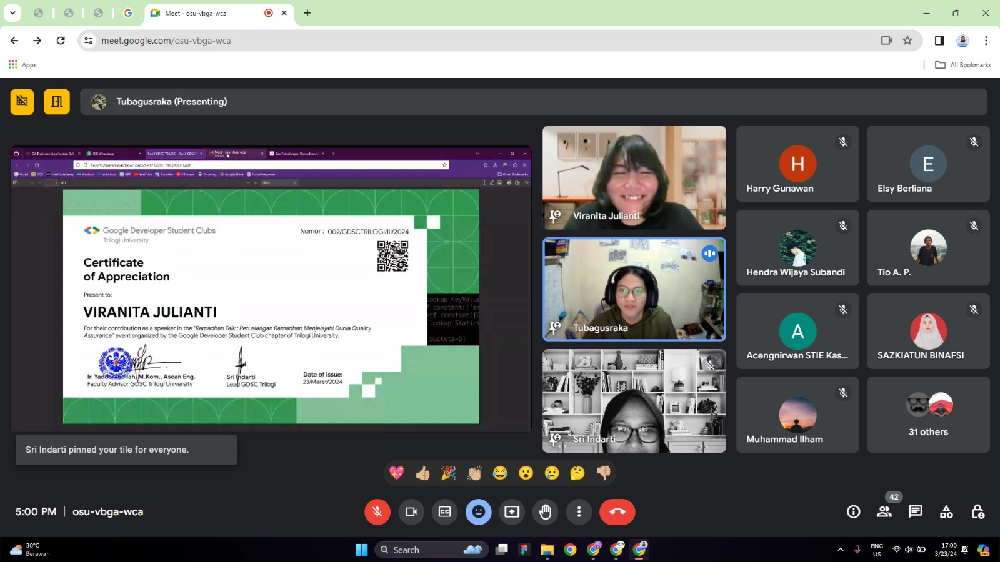
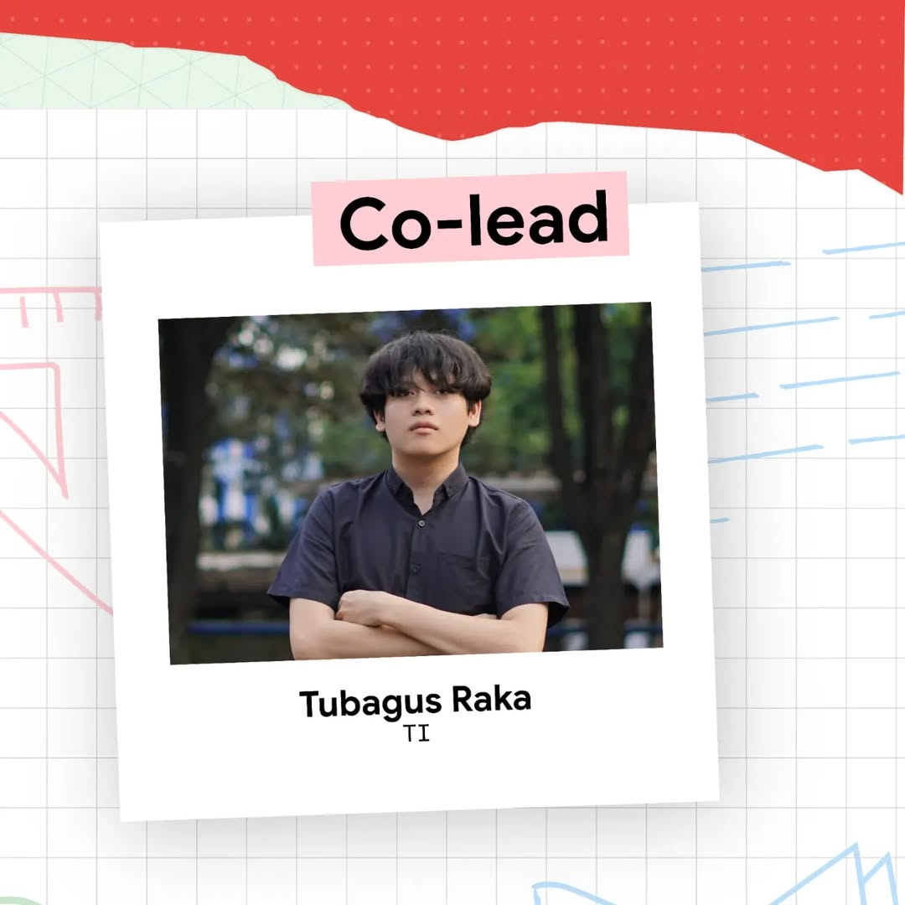

Passionate about Web Development, Mobile Development, System Analysis, and UI/UX Design, I am always eager to learn, explore IT projects, and share knowledge. I am currently pursuing a bachelor's degree (S1) in Informatics Engineering at Trilogi University, focusing on Intelligent Systems and maintaining a GPA of 3.82/4.00. I have hands-on experience through technical internships at DJKN and BPJS Ketenagakerjaan, where I have actively worked on digital solutions using Web Frameworks, Android Studio, and Figma for the past year.
Tubagus Raka Satria Putra
Bachelor of Computer Science (S.Kom)
raka230803@gmail.com
085695522866
Menempuh pendidikan S1 Teknik Informatika dengan IPK 3.82/4.00. Berfokus pada Full-Stack Web Development (Laravel, React, Vite), arsitektur sistem informasi cerdas, rekayasa perangkat lunak, dan UI/UX design.
Comprehensive digital solutions ranging from full-stack web development to systems analysis and cloud infrastructure.
Verified professional credentials in Artificial Intelligence, Web Development, BNSP National Competency, and Networking.
 IBM
IBM
IBM SkillsBuild & watsonx.ai
Kredensial spesialisasi pembuatan dan pelatihan agen AI cerdas berbasis IBM watsonx.ai dan retrieval-augmented generation (RAG).
 IBM
IBM
IBM SkillsBuild
Sertifikasi pemahaman fundamental Artificial Intelligence, machine learning algorithms, NLP, dan etika implementasi AI.
 IBM Granite
IBM Granite
IBM
Penguasaan implementasi foundation model IBM Granite untuk otomatisasi klasifikasi data skala besar dan perangkuman teks cerdas.
 Web Dev
Web Dev
IBM SkillsBuild
Fondasi arsitektur web modern, integrasi responsive layout dengan HTML5, CSS3, DOM scripting JavaScript, dan RESTful web.
 BNSP
BNSP
Badan Nasional Sertifikasi Profesi (BNSP)
Sertifikasi kompetensi nasional tingkat mahir dalam otomasi dokumen, analisis data spreadsheet kompleks, dan produktivitas digital.
 BNSP
BNSP
Badan Nasional Sertifikasi Profesi (BNSP)
Sertifikasi keahlian teknisi jaringan komputer nasional: konfigurasi routing, switching, sub-networking, dan troubleshooting LAN/WAN.
 Telkom
Telkom
Telkom Indonesia
Pelatihan profesional teknik instalasi, penyambungan splicing kabel fiber optic, dan pengujian redaman link optik.

GDSCGoogle Developer Student Clubs
Certificate of Appreciation sebagai moderator dan fasilitator workshop teknologi komunitas developer mahasiswa.
Web applications, enterprise information systems, and technical software engineering projects.
Sistem Monitoring & Evaluasi Kinerja Anggaran unit PSM DJKN Kemenkeu RI. Arsitektur multi-tier role, interaktif chart dengan ApexCharts, dan integrasi Supabase PostgreSQL REST API.
Platform digital persuratan & kearsipan militer Kodam Jaya TNI-AD. Dilengkapi pencarian berkas instan, role-based access, export otomatis data ke Excel/PDF, dan audit trail log.
Sistem penelusuran status perkara hukum dan peradilan militer Kodam XVII Cendrawasih. Sinkronisasi dokumen kasus secara realtime dan manajemen tahapan persidangan.
Platform web reservasi salon kecantikan online dengan pemilihan layanan dinamis, kalender jadwal terintegrasi, dan pembayaran otomatis melalui Payment Gateway Xendit API.
Platform publikasi digital dan knowledge sharing inovasi dengan alur multi-penulis, layout responsif modern, dan implementasi UI/UX dari Figma ke full-stack web.
Platform web interaktif pembelajaran matematika dasar dengan materi visual menarik, kuis berbatas waktu, dan integrasi backend Firebase realtime.
Aplikasi desktop pencatatan pergudangan dengan operasi CRUD lengkap, pelacakan stok barang masuk-keluar, dan database relasional terintegrasi.
Perancangan skema relasional, normalisasi hingga 3NF, stored procedure, triggers audit, dan kalkulasi otomatis pajak penjualan untuk sertifikasi BNSP.
Dokumentasi visual arsitektur sistem enterprise mencakup Use Case Diagram, Activity Diagram, Sequence Diagram, and IPO Flowchart menggunakan Draw.io.
Workshops, teaching assistance, developer communities, and industry milestones.

Asisten Dosen - Mengajar 42+ Mahasiswa S1 Informatika
Universitas Trilogi - Bidang Minat Rekayasa Perangkat Lunak
Pelatihan Bersertifikat Telkom Indonesia & SMK YP IPPI
Currently open to full-stack Web Development opportunities, government systems, and freelance projects. Let's create something extraordinary together.